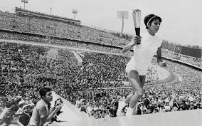
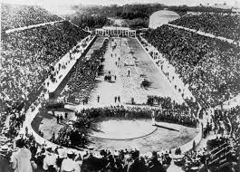

A história dos Jogos Olímpicos começa na Grécia Antiga, onde as competições eram realizadas em honra a Zeus. A primeira Olimpíada moderna foi realizada em 1896, em Atenas, e desde então os Jogos têm sido um símbolo de paz e união entre os povos.
 